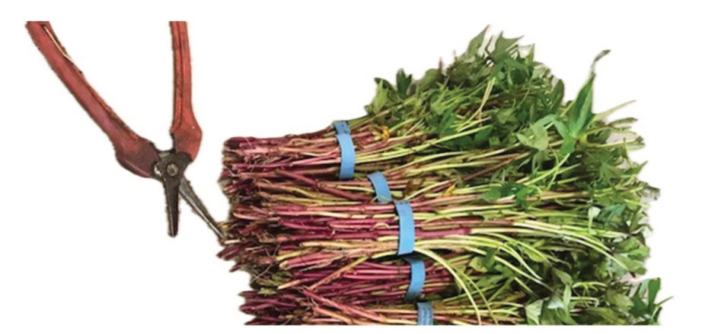

Selection of planting material
Vegetative propagation is the common method used to propagate sweet potato in
Tanzania. Young vines (apical cuttings) are recommended because cuttings from
the base of the vines frequently harbour weevils. Disease-free plant materials
can be produced in the laboratories using tissue culture technique. Using clean,
disease-free planting materials from reliable sources is essential to increase sweet
potato production. The vines of length (15-50 cm) are prepared and used for
establishing a field for sweet potato (Figure 4.2).

Figure 4.2: sweet potato vines
Source: https://www.johnnyseeds.com/growers-library/vegetables/sweet-potatoes/growing-tips-sweet-
potatoes-from-slips.html
Land preparation
Land preparation for planting sweet potato is prepared in various ways. It is
usually prepared when the soil is moist and workable at the beginning of rains,
though it can be carried out at any time. Four seedbed types are used in potato
production: ridges, mounds, raised, and flatbeds. Ridging is the most common
method of land preparation in Tanzania.
Farmers prepare ridges by scraping weeds into the old furrows and then splitting
the old ridges to form new furrows, covering the weeds. Ridges protect the soil
and improve drainage. Mounds are made by hoeing the soil together and their
surrounding area. They are often found in intercropped fields with cassava or
other crops. The following are steps to be followed to prepare a ridge for planting
sweet potato: